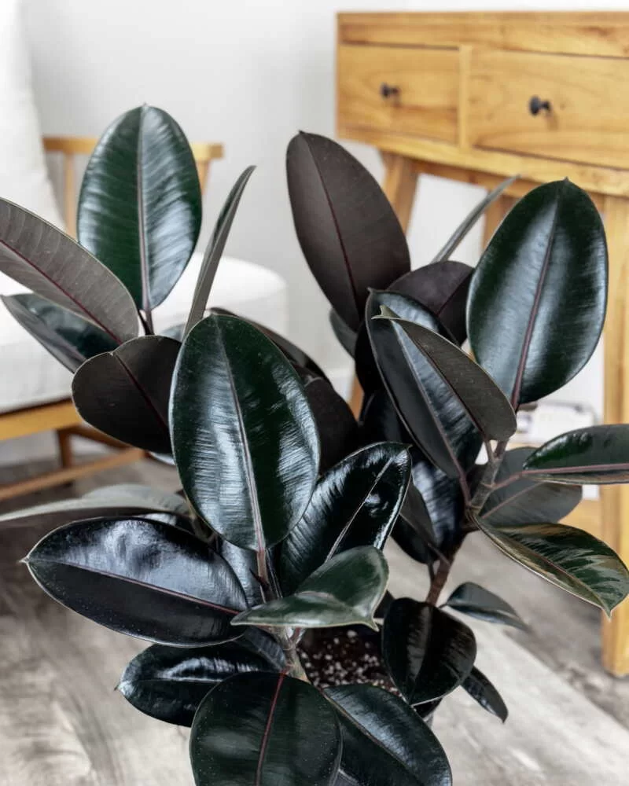

Ficus Elastica
Ficus Elastica is one of the most prominent plants in Playboi Carti's Mansion. He likes them because theyre known as the Rubber Plant. He thinks it's so cool because of Luffy from One Piece.
| Height | 2-3 Feet |
|---|---|
| Bloom Time | Summer |
| Sunlight | Mid Sun |
| Water | Low to Moderate |